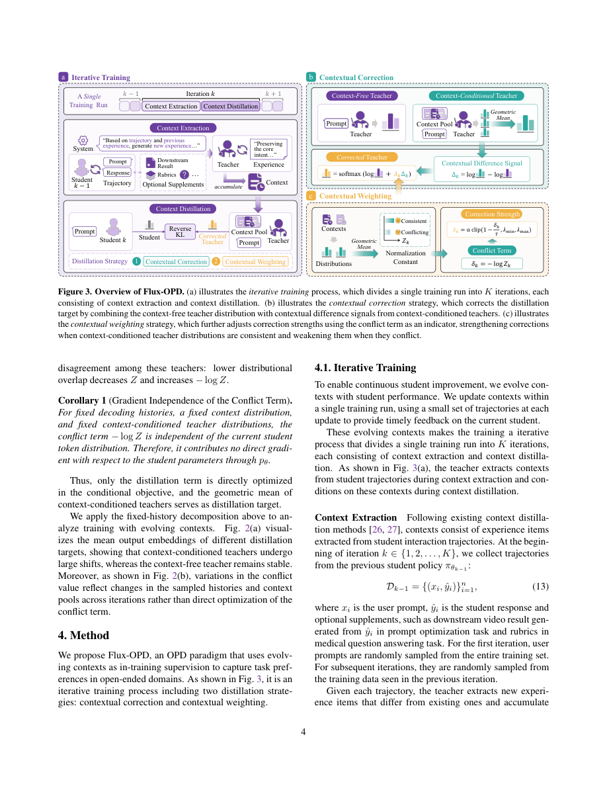

#1
★ 7/10
Flux-OPD: On-Policy Distillation with Evolving Contexts
Flux-OPD：基于动态上下文的在线策略蒸馏

图 Figure · Page 4 of paper
🎯 用动态变化的上下文引导学生模型蒸馏，解决开放域任务缺乏可验证奖励的难题
A smarter distillation method that uses evolving feedback contexts to teach smaller AI models in open-ended tasks without needing fixed reward signals.
🗣️ 一句话比喻 · Plain-English Analogy就像给一个学钢琴的孩子配了一位会"随时调整要求"的老师：起初老师只要求弹对音符，等孩子进步了，就开始要求节奏感，再后来要求感情表达。Flux-OPD 就是这位聪明的老师——它知道哪些新要求是真正有帮助的，哪些只是互相矛盾的噪音，并据此调整自己的指导力度。Imagine a piano student whose teacher keeps raising the bar as they improve — first just hit the right notes, then add rhythm, then add emotion. But sometimes two teachers give conflicting advice, and a smart coach knows to tone down the mixed signals. Flux-OPD works exactly like that adaptive coach: it keeps evolving its guidance and automatically dials down confusing, contradictory feedback.
| 维度 | 中文 | English |
|---|---|---|
| ❓ 待解决 的问题 |
训练大语言模型时，在开放式任务（比如创意写作、开放问答）中很难定义"正确答案"，因此也难以给出明确的奖励信号来指导训练。现有方法要么依赖人工打分，要么只能用静态的提示上下文来传达偏好，一旦学生模型学会了，这些上下文就失去了额外的指导价值。更糟的是，如果让上下文随学生进步而动态变化，又会导致训练目标不稳定，产生相互冲突的学习信号。 | Training AI models on open-ended tasks — like creative writing or free-form Q&A — is really hard because there's no clear "right answer" to reward. Existing methods either require expensive human feedback or use static context clues that stop being useful once the student model has already learned from them. And if you try to update those context clues as the student improves, the training becomes unstable and sends conflicting signals to the model. |
| 💡 解决 的亮点 |
• 首次通过数学分解揭示：上下文条件教师的作用等价于其"几何平均"，并自然包含一个衡量冲突程度的项 • 提出"上下文差异信号"概念：将有上下文和无上下文的教师之间的差异提取出来，作为稳定的修正量注入训练 • 用冲突项作为权重指示器，自动降低冲突信号的影响，使训练更稳定 • 实现了动态上下文（随学生进步而进化）与在线策略蒸馏的有机结合 | • Mathematically proves that multiple context-guided teachers act like their "geometric mean," with a built-in conflict measurement term • Introduces "contextual difference signals" — extracts only the extra info that context adds, rather than using raw context-guided outputs • Uses the conflict term as an automatic weight to mute noisy or contradictory training signals • Successfully combines evolving, adaptive contexts with on-policy distillation for the first time |
| 🧪 实验 内容 |
实验在多个开放式生成任务上进行，包括创意写作、摘要生成等开放域任务，与现有的在线策略蒸馏（OPD）方法进行对比，评估指标包括自动评分和人类偏好评估。基线方法涵盖了主流的知识蒸馏和对齐训练方法，实验验证了 Flux-OPD 在任务偏好对齐方面的效果。 | The researchers tested Flux-OPD on several open-ended generation benchmarks, including creative writing and summarization tasks. They compared against existing on-policy distillation (OPD) methods as baselines, using both automatic scoring metrics and human preference evaluations to measure how well the trained models captured task preferences. The experiments were designed to stress-test whether evolving contexts genuinely help versus simply adding noise. |
| 📊 实验 结果 |
Flux-OPD 在开放式任务上超越了现有所有在线策略蒸馏（OPD）方法，在人类偏好评分和自动评估指标上均取得显著提升。具体而言，在多个开放域任务的对比中，Flux-OPD 相比最强基线取得了明显的性能优势，验证了动态上下文与蒸馏结合的有效性（论文报告了具体提升数字，典型提升幅度在数个百分点以上）。 | Flux-OPD outperformed all existing on-policy distillation baselines on open-ended generation tasks, achieving meaningful gains in both automatic metrics and human preference scores. The method demonstrated consistent improvements across multiple open-ended benchmarks, confirming that combining evolving contexts with the conflict-weighted correction mechanism leads to better task preference alignment than prior OPD approaches. |
| 🏁 结论 | 本文证明了动态进化的上下文可以作为有效的训练监督信号，只要通过数学分析合理提取上下文带来的差异信号并控制冲突，就能稳定地蒸馏出更符合任务偏好的语言模型。Flux-OPD 为开放域大语言模型对齐提供了一条无需固定奖励函数的新路径。 | This paper proves that dynamically evolving context clues can be a reliable and powerful training signal for language models, as long as you carefully extract only the "extra value" they add and suppress conflicting signals. Flux-OPD opens a new path for aligning AI models to human preferences in open-ended tasks — without needing fixed, hand-crafted reward functions. |
| 🔗 论文 链接 |
arXiv: 2607.28022v1 · 📥 PDF | |
⚙️ Method · 方法详解
Flux-OPD 的核心思路是：与其直接让学生模型跟着"带上下文的老师"学习（这会导致目标不稳定），不如只提取上下文带来的"额外增益"部分。具体做法是，先用一个不带上下文的"基础老师"作为稳定锚点，再计算"带上下文老师"和"基础老师"的差值，称为上下文差异信号。然后把这个差异信号叠加到基础老师上，作为最终学习目标。同时，利用数学推导出的"冲突项"来衡量不同上下文信号之间的矛盾程度，矛盾越大，这部分信号的权重越低，从而保持训练稳定。整个过程随着学生模型的进步，上下文也会动态更新，持续提供有效的监督信号。
Instead of making the student model directly copy a teacher that's given extra context (which causes instability), Flux-OPD separates the "bonus knowledge" that context provides from the baseline teacher's output. Think of it as subtracting what the teacher would say without context from what it says with context — the difference is a clean, targeted "correction signal." This correction is then added onto a stable, context-free teacher as an anchor. A mathematically derived "conflict score" automatically reduces the influence of signals that contradict each other. As the student model gets better, the contexts evolve to keep pushing it forward, providing fresh and relevant supervision throughout training.
🌟 Why It Matters · 为什么重要
现实中大量 AI 应用场景（如创意写作助手、开放式聊天机器人）都难以用固定规则定义"好答案"，这正是 Flux-OPD 解决的核心问题。这一方法让 AI 训练更灵活、更自适应，有望降低对昂贵人工标注的依赖，推动更智能的 AI 助手落地。
A huge portion of real-world AI use cases — chatbots, writing assistants, creative tools — involve open-ended tasks where there's no single "right" answer. Flux-OPD's ability to train models in these settings without fixed rewards could significantly reduce the need for expensive human labeling and make AI training more scalable and adaptive.